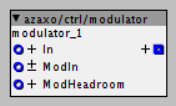
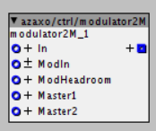

azaxo/ctrl/modulator

azaxo/ctrl/modulator2M

status
active
description:
An object to modulate another object. This object was created to be able to more easily use several of the modulation sources available on the Roli Seaboard.
The In connector is the main source of modulation.
The value on the ModIn connector will be added on top of the value set by the In connector.
The headroom is the amount between the current calculated value and the maximum value.
The value on the ModHeadroom inlet adds part of the headroom on top of the calculated value.
The Master 1 inlet will attenuate the level of modulation.
The Master 2 inlet will attenuate the level of modulation on the output.
example of intended use
You can connect the modulator to the frequency input control of a filter. Through the In connector you can control the frequency directly.
You then can connect a mod wheel, LFO or ADSR to the ModIn connector which will modulate the frequency of the filter.
Finaly you can connect your aftertouch (or Glide on the Seaboard) to the ModHeadroom and based on the amount of pressure the filter will open further.
The version with the two masters is intended for controlling the VCA. Master 1 is intended to conect to the Velocity output of your keyboard. Master Two is connected to a dial to control the master volume of the VCA.

{kind=link}